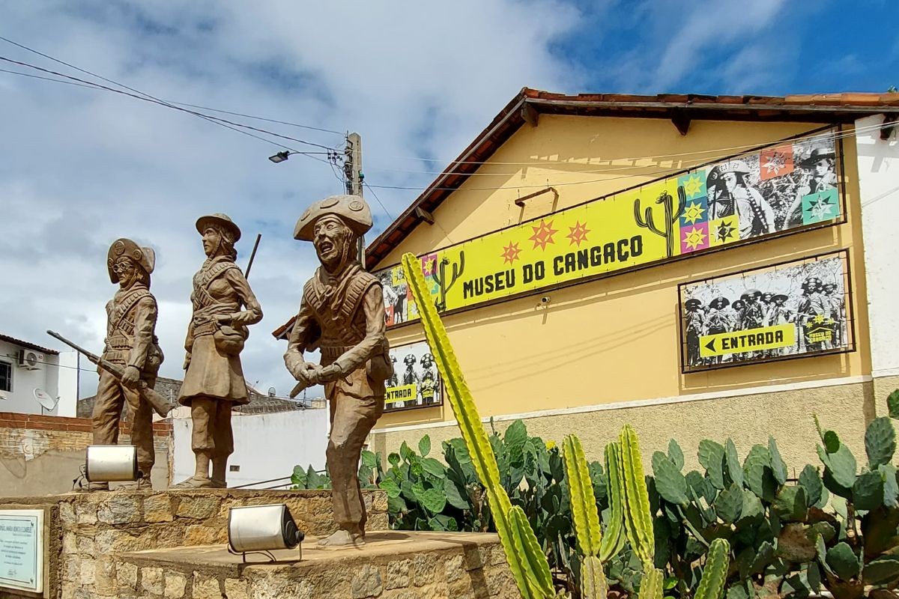

🇧🇷 Português
O Museu do Cangaço de Serra Talhada abriga o maior acervo do gênero no Brasil. Localizado na antiga estação ferroviária, o museu preserva objetos, fotos e documentos que contam a saga de Virgulino Ferreira da Silva, o Lampião.
A visita oferece uma perspectiva rica sobre o fenômeno social e cultural do cangaço, fundamental para entender a história do sertão nordestino.
🇺🇸 English
The Cangaço Museum in Serra Talhada houses the largest collection of its kind in Brazil. Located in the old railway station, the museum preserves objects, photos, and documents that tell the saga of Virgulino Ferreira da Silva, known as Lampião.
The visit offers a rich perspective on the social and cultural phenomenon of cangaço, essential for understanding the history of the Brazilian backlands.